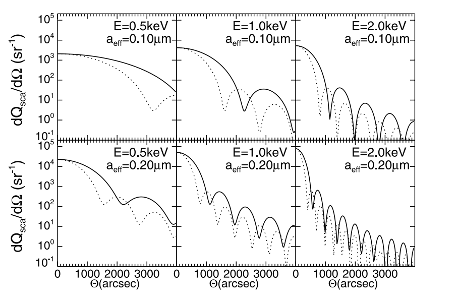

5 Testing against previous results
5.1 Spherical case (ADT/Mie theory)
5.1.1 GGADT

5.1.2 Actual (Figure 1) from Draine & Allaf-Akbari 2006

5.2 Ellipsoidal case (Draine and Allaf-Akbari 2006)
5.2.1 GGADT

5.2.2 Actual (Figure 2) from Draine & Allaf-Akbari 2006

5.3 Agglomeration of spheres (Heng & Draine 2009)